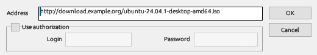
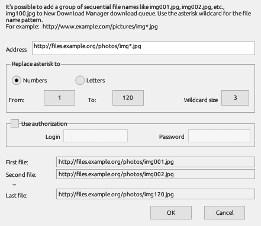
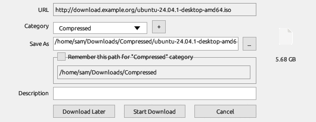

You can hand a file to NDM from the browser, by typing or copying its address, by dragging a link, as a numbered series, from a list or from the command line. Each way ends in the Download File Info window, unless you turned it off.
NDM's extension works in Chrome, Edge, Brave, Opera, Vivaldi and Firefox. When you click a link to a file of a listed type, the extension passes it to NDM and the browser doesn't download it. If NDM isn't running, the extension starts it in the notification area.
To install the extension:
Click Add URL on the toolbar (or Tasks → Add new download) and enter an address. NDM takes http, https and ftp addresses, and mms, rtmp and rtsp streams. Tick Use authorization when the server asks for a user name and password.

With Automatically start downloading of URLs placed to clipboard ticked on the General page of Options, copying the address of a file of a listed type opens Add URL with that address. Text that was already on the clipboard when you ticked the option is left alone.
On Windows, drag a link from the browser onto the main window. On both systems you can drag it onto the drop target, a small window that stays on top of other windows: turn it on with Tasks → Show drop target.
Tasks → Add batch download adds a series of files whose addresses differ only by a number or a letter.

Tasks → Add batch download from clipboard takes every address on the clipboard instead.
Tasks → Import adds the addresses from a text file (From text file) or from an export file (From NDM export file, .ef2). Tasks → Export writes your list in the same two formats.
ndm.exe [/d URL] [/p folder] [/f file name] [/n] [/a] [/q] [/s]
On Linux, give the same switches to the AppImage. When NDM is already running, the running copy takes the command.
Before a download starts, NDM shows its address, the category it picked from the file type, the full path it will save to and the size when the server reports it.

Options → Downloads → Show start download dialog turns this window off; downloads then start with the category's folder.